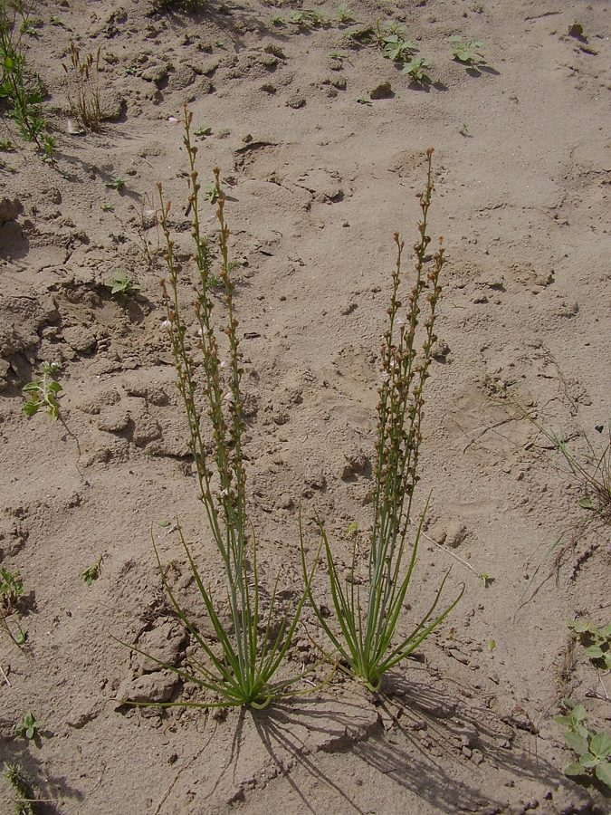

पियाज़ीOnion Weed
Asphodelus tenuifolius · Asphodelaceae · FLR-0179

- Scientific nameवैज्ञानिक नाम
- Asphodelus tenuifolius Desf.
- Familyकुल
- Asphodelaceae
- Hindiहिंदी
- पियाज़ी
- Local namesस्थानीय नाम
- piazi, piazee, pyazi, jangli pyaz, onion weed
- Status hereयहाँ की स्थिति
- naturalized
- Movementआवागमन
- Resident, here all year
- IUCNIUCN
- not evaluated
- Reviewसमीक्षा
- audited and independently read
When to look कब देखें
Expected mainly in October, November, December, January, February, March, April, May.मुख्यतः अक्टूबर, नवंबर, दिसंबर, जनवरी, फ़रवरी, मार्च, अप्रैल, मई में अपेक्षित।
Uses and possibilities उपयोग और संभावनाएँ
Drawn from the documented uses in the profile below, where each is labelled traditional, current or a research lead. All uses →
पियाज़ी / Onion Weed
Asphodelus tenuifolius Desf. — Asphodelaceae
पियाज़ी (प्याज़ी, आसफोडेल, खखरा) — सर्दियों में गेहूँ और दूसरी फसलों के खेतों में उगने वाली एक सफेद फूलों वाली घास जैसी खरपतवार। पत्तियाँ बहुत पतली, प्याज़ जैसी गंध वाली (इसीलिए नाम पियाज़ी)। तने सीधे, 20-50 सेंटीमीटर ऊँचे, सफेद फूलों की एक लंबी बालियों जैसी आकृति। बहुत बीज बनाती है, और इसीलिए खेतों में फैल जाती है। लेकिन इसका कोई उपयोग नहीं है — न खाने में, न चारे में, न दवाई में।
Quick Identification त्वरित पहचान
| Feature | Description |
|---|---|
| Plant form | Winter annual, 20–50 cm, erect, unbranched or sparsely branched |
| Leaves | Basal rosette and stem leaves, very narrow, 1–2 mm wide, linear, fistular (tubular) |
| Stem | Erect, solid, smooth, unbranched below inflorescence, grayish-green |
| Flowers | Small, white or pale pink, 0.5–1 cm, arranged in a long raceme |
| Fruits | Capsules, 0.5–1 cm, rounded, reddish when mature |
| Odor | Bulbs and leaves smell faintly of onion when crushed |
Field tip: A winter herb with a basal rosette of very narrow, fistular (hollow), onion-scented leaves and a long, slender spike of small white or pale pink flowers. Look for it on field margins and in disturbed ground from November to March.
Morphology आकारिकी
Biometrics (typical measurements for wild plants in northern India):
| Measurement | Range |
|---|---|
| Plant height | 20–50 cm |
| Leaf length | 15–30 cm |
| Leaf width | 1–2 mm |
| Flower spike length | 10–20 cm |
| Flower diameter | 0.5–1 cm |
| Fruit diameter | 0.5–1 cm |
Root system: Fibrous roots with a small bulb-like base; shallow in disturbed ground.
Leaves: Basal rosette in young plants; later, alternate stem leaves. Leaves are very narrow (1–2 mm), linear, fistular (hollow and tubular), with a characteristic onion-like smell when crushed or broken. The leaf color is gray-green to green.
Stem: Erect, solid, smooth, grayish-green, unbranched below the inflorescence. The stem is somewhat fleshy at the base.
Inflorescence: A long, slender, spike-like raceme of small flowers, 10–20 cm long, with flowers distributed along the length. Each flower is pedicelled (on a stalk) and typically white or pale pink, occasionally tinged with red.
Flowers: Small, 0.5–1 cm diameter, with 6 tepals (petal-like sepals), white, pink, or occasionally with a darker line or stripe down the center. The flowers open in sequence from the bottom upward along the raceme.
Fruits: Small capsules, rounded, 0.5–1 cm diameter, with three chambers. The fruit is green when immature, turning reddish or tan when mature. Each capsule contains numerous small, black seeds.
Seeds: Very small, black, glossy, numerous per capsule; easily dispersed by wind and water.
हिंदी: बहुत पतली पत्तियाँ, प्याज़ जैसी गंध। सफेद फूलों की लंबी बालियाँ। बहुत बीज।
Associated Species / Interactions संबंधित प्रजातियाँ
- Associated crops: Infests Wheat, barley, Chickpea, and other winter crops.
- Associated weeds: Often found with Bathua, Indian Mustard, and other winter field weeds.
- Seed dispersal: Dispersed by wind, water, and contaminated seed.
Life Cycle / Phenology जीवन चक्र
| Month / Season | Event |
|---|---|
| September–November | Seed germinates with winter rains; seedling emergence |
| November–December | Basal rosette formation; vegetative growth |
| January–February | Stem elongation and flowering |
| February–April | Fruit maturation and seed ripening; seed shed |
| April–May | Plant senescence and death |
Seeds require cool stratification and germinate readily in autumn. Lifespan is one season (winter annual). A single plant can produce hundreds to thousands of seeds.
हिंदी: अक्टूबर-नवंबर में अंकुरण, दिसंबर-जनवरी में पत्ते, जनवरी-फरवरी में फूल, फरवरी-अप्रैल में बीज।
Pests and Diseases कीट और रोग
- No specific pests or diseases reported.
- The plant is hardy and generally unaffected by pathogens.
Agricultural / Human Relevance कृषि प्रासंगिकता
The weed problem: Asphodelus tenuifolius is a persistent winter weed of crop fields, particularly wheat and chickpea. The plant is not directly competitive with crops (it is not as vigorously growth as some weeds), but its presence is undesirable primarily because:
- Seed contamination: The small, dark seeds can contaminate grain or seed lots and reduce the market value of the product.
- Abundance: In heavily infested fields, the plant becomes numerically dominant and is considered a nuisance.
- Persistence: The plant produces abundant seed that remains viable in soil for years, making it difficult to eliminate through a single cultivation or herbicide application.
Control methods:
- Manual weeding: Early hand-pulling is effective but labor-intensive.
- Mechanical: Repeated ploughing and harrowing can reduce populations over time.
- Herbicidal: Some herbicides used in wheat are effective, though coverage and timing are important.
- Cultural: Crop rotation, early sowing (to get the crop ahead of the weed), and good seed-cleaning reduce the weed's impact.
No documented use: Unlike some other field weeds (e.g., Toothed Dock, Common Vetch), Asphodelus tenuifolius has no documented food, fodder, medicinal, or other use. Its presence is considered purely negative by farmers.
Regional variation: The weed is particularly problematic in arid and semi-arid wheat-growing regions where its drought tolerance gives it an advantage.
हिंदी: खेत में कोई भी फायदा नहीं। सिर्फ नुकसान। बीज बहुत बनाता है, और अगर गेहूँ के साथ मिल जाएँ तो गेहूँ की गुणवत्ता खराब हो जाती है।
Expected Locally स्थानीय रूप से अपेक्षित
Not a field record. Written from published accounts for eastern Uttar Pradesh. No confirmed local sighting yet — if you have seen it, that is what the atlas needs.
अभी तक स्थानीय पुष्टि नहीं। यह विवरण प्रकाशित स्रोतों से है, किसी अवलोकन से नहीं।
May be expected as a winter weed in wheat fields and on disturbed ground in drier parts of Basti district, particularly in semi-arid blocks. The plant is more common in arid and semi-arid regions of India; its presence in eastern UP may be limited to drier microhabitats.
Distribution वितरण
Global range: Native to the Mediterranean region and western Asia; naturalized in semi-arid regions worldwide.
In India: Widespread in arid and semi-arid wheat-growing regions of northern India, particularly Rajasthan, Punjab, and western Uttar Pradesh.
In Uttar Pradesh: More common in western and central districts; less common in the wetter eastern regions.
In Basti district / eastern UP: Expected in drier blocks and disturbed ground; may be absent in wetter years or in fields with good moisture management.
Research Questions शोध प्रश्न
Anyone can investigate these | कोई भी इन प्रश्नों की जाँच कर सकता है
- How many seeds does one piazi plant produce, and what is their longevity in soil? — Harvest mature plants; count seeds; test germination after storage.
- Does piazi seed survive mechanical threshing and winnowing, and how much contaminates grain? — Test seed mixing with grain; process and measure contamination.
- Which herbicides are effective against piazi in wheat fields, and what is the spray timing? — Talk to farmers and agricultural extension officers; document herbicide results.
- Can piazi be controlled by early sowing of wheat, before piazi seed germinates? — Compare early vs. late-sown fields; measure weed infestation.
- Is piazi more common in dry years than wet years, and does soil type affect its prevalence? — Collect data from multiple years and fields; correlate with rainfall and soil type.
Similar Species मिलती-जुलती प्रजातियाँ
| Species | How to tell apart | हिंदी |
|---|---|---|
| Onion, garlic (Allium spp.) | Cultivated plants; larger bulbs; different growth form | प्याज़, लहसुन — पालतू, बड़े |
| Ornithogalum (Star-of-Bethlehem) | Similar flowers; leaves not fistular; lacks onion smell | अलग पौधा — बिना प्याज़ गंध |
Field rule: A winter herb with very narrow, fistular, onion-scented basal leaves and a tall, slender spike of small white or pale pink flowers; producing abundant small dark seeds, is piazi.
Taxonomy & Classification वर्गीकरण
Original description. Described by Desfontaines in 1829 (based on specimens from North Africa). The genus name Asphodelus is from the Greek asphodelos, an ancient name for the plant, mentioned in Homer's Odyssey. The specific name tenuifolius means "thin-leaved," referring to the narrow leaves.
Subspecies. Monotypic — no subspecies are currently recognised.
Family and order placement. Asphodelaceae (formerly included in Liliaceae), order Asparagales. The family includes asphodels, aloes, and other succulents. Asphodelus is a genus of about 17 species, distributed in the Mediterranean region, western Asia, and Africa.
Phylogenetic notes. Asphodelus tenuifolius is the most widespread and common Asphodelus species in semi-arid regions. Other Asphodelus species are less commonly encountered.
IUCN status rationale. Not evaluated. Naturalized and locally invasive in semi-arid regions; not assessed for conservation status.
Photo Gallery फोटो गैलरी
Photos needed आवश्यक फोटो
- [ ] Whole plant showing basal rosette and flowering stem (पूरा पौधा)
- [ ] Close-up of narrow, fistular leaves (पत्तियाँ)
- [ ] Flowering spike showing white flowers (फूल)
- [ ] Mature fruits (pods) with ripened seeds (फल)
No photos yet — add field photos to media/species/piazi/ and run node scripts/sync_photos.js.
References संदर्भ
- Desfontaines, R.L. (1829). Flora Atlantica, vol. 1, p. 282.
- Hooker, J.D. (1892). Flora of British India, vol. 6. L. Reeve & Co., London.
- Indian Council of Agricultural Research (2021). Handbook of Agriculture. ICAR, New Delhi.
- Malik, R.K., Singh, S. & Yadav, A. (2016). Weed management in dryland cereals. Journal of Crop Improvement 30(4): 123–145.
- Botanical Survey of India. State Flora Series: Flora of Uttar Pradesh. BSI, Kolkata.
- GBIF Occurrence Data — Asphodelus tenuifolius, India (2015–2026).
Source file: species/flora/crops_associated/piazi.md